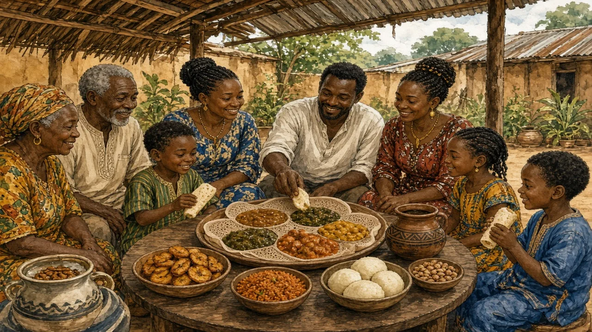

Jollof rice, injera, ugali, fufu: the region's food is as varied as its languages — and it is usually eaten together.
Sub-Saharan Africa · Food & daily life · Lesson 6 of 7
🌍 World map · ← Around the World: Sub-Saharan Africa · 🌱 Easier version (A2) · ← Never Rush a Greeting · Huts or High-Rises? Africa's Fast-Growing Cities →

Each new word is hidden in a sentence. Read it aloud and say what you think the bold word means from the rest of the sentence — then reveal it and see how close you were.
Read each part. After it, there's a quick comprehension check (try the questions from memory first), then one thing to discuss.
Most meals in the region are built around a starchy staple, eaten with a sauce or stew. In eastern and southern Africa, it is often maize, cooked into a thick porridge known as ugali in Kenya and Tanzania, sadza in Zimbabwe and nshima in Zambia. In West and Central Africa, people pound cassava, yam or plantain into smooth dough called fufu and eat it with soups such as egusi, made from melon seeds. In the Ethiopian highlands, the staple is injera, a spongy, sour flatbread made from teff, a tiny grain that is fermented for several days. Surprisingly, maize and cassava came from the Americas only about five hundred years ago and have since become so central that they feel ancient.
1. What is ugali made from?
2. What is injera?
1. Maize.
2. A sour flatbread made from fermented teff.
Jollof rice, cooked in a spicy tomato sauce, is claimed by Nigeria, Ghana, Senegal and others, and a friendly argument over whose is best, known as the “jollof wars”, is an old tradition online. Its origins are often traced to Senegal's thieboudienne, a dish of fish and rice. South Africa has bobotie, a spiced baked mince dish from the Cape Malay community, and the braai, a barbecue that is a social occasion. Coffee comes from Ethiopia, where a ceremony of roasting and brewing it is a sign of friendship, and Côte d'Ivoire and Ghana grow more than half of the world's cocoa, although most of the chocolate is made elsewhere. A feast can involve many dishes, and ordinary meals often do too.
1. Where does coffee come from?
2. Which countries grow more than half of the world's cocoa?
1. Ethiopia.
2. Côte d'Ivoire and Ghana.
Meals are often eaten together from a shared dish, with the right hand or with bread or porridge as a scoop, and the best pieces are often offered to guests and elders. In Ethiopia, a custom called gursha means feeding another person a bite by hand, as a sign of affection. Food is also at the centre of celebrations, from weddings to harvest festivals. At the same time, hunger is a serious problem in some regions, particularly where drought and conflict occur together, and many families struggle with rising food prices. But hunger describes particular places and times, not the whole region, and many African farmers, cooks and chefs are now reviving traditional grains and building successful restaurants and food businesses.
1. What is gursha?
2. Does hunger describe the whole region?
1. The Ethiopian custom of feeding another person a bite by hand.
2. No. It affects particular places and times.
A stereotype and the reality rarely match. This lesson's grammar gives you the structure to describe the difference.
Complete each sentence about this topic.
1. “I love injera.” — “ do I.”
2. Ghana makes jollof, and Nigeria too.
3. I like the red stew, but she prefers the green .
1. So
2. does
3. one
1. “I can't eat very spicy food.” — “ can I.”
2. Ethiopia grows coffee, and Kenya too.
3. These dishes are mild, but those are very hot.
1. Neither
2. does
3. ones
Hold on to this — you'll need it in the Speak tab.
The stereotype of “African food” in the world's media often swings between two images: famine and exotic. Both leave out the ordinary: a family cooking dinner, a market stall, a recipe that has been argued over for generations. African cuisines are also less visible in restaurants abroad than Italian or Indian cuisine, which is partly a question of history and migration, not of quality. A growing number of chefs, cookbook writers and food entrepreneurs, in the region and in the diaspora, are changing that, and ingredients such as teff, hibiscus and fonio are appearing on menus around the world.
This is the heart of the lesson — do all of it out loud. The timer is there to keep you going: fill the time with detail rather than escaping it.
Explain what people eat across Sub-Saharan Africa and how meals are shared, as if to a friend who thinks African food is all the same. Move through the arc: staples and stews → famous dishes and big claims → eating together, and real hunger.
Use today's grammar at least three times, and work in at least five key words (staple, stew, cassava, ferment, communal, spice, harvest, tradition).
“Sharing a meal from one plate is better than eating from separate plates.” Discuss.
Tell a story from your own world — work, family, the news — that connects to this topic. Stuck for an idea? Pick one of these and run with it:
🌍 World map · ← Around the World: Sub-Saharan Africa · 🌱 Easier version (A2) · ← Never Rush a Greeting · Huts or High-Rises? Africa's Fast-Growing Cities →